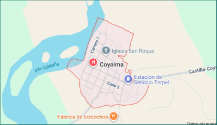

Alertas Recientes
Mantente informado sobre cambios en la calidad del agua.

Un sistema que permite monitorear en tiempo real la calidad del agua, usando sensores y una aplicación fácil de usar. Pensado para empoderar a las comunidades con información clara, alertas tempranas y herramientas para tomar decisiones que protejan su recurso más valioso: el agua.


El 65% de los habitantes son jóvenes menores de 30 años y más del 50% de los hogares no cuentan con acceso regular al agua potable. El agua que consumen proviene de fuentes naturales como quebradas, que en temporadas secas disminuyen considerablemente.
Esto puede ser de forma anónima si el usuario lo desea, estos testimonios nos ayudan a conocer más la comunidad y a mejorar para ustedes.
Por medio de estas nosotros podemos mejorar día a día por medio de sus opiniones no solo de esta página sino del sistema completo de monitoreo.
Conoce por medio de nuestra página diferentes formas en las que, desde tu casa puedes filtrar este recurso tan importante.
Resumen de la calidad del agua durante el mes de enero, incluyendo análisis de tendencias y recomendaciones.
Descargar PDFActualizaciones semanales sobre el estado de los sensores y alertas importantes para la comunidad.
Ver OnlineInformes técnicos detallados sobre parámetros de calidad del agua y metodologías de medición.
AccederMaterial educativo sobre conservación del agua y mejores prácticas para el cuidado del recurso hídrico.
ExplorarSomos un equipo multidisciplinario comprometido con la protección y conservación del recurso hídrico. Nuestra misión es empoderar a las comunidades con tecnología accesible para el monitoreo de la calidad del agua.
Un mundo donde todas las comunidades tengan acceso a agua limpia y segura, respaldado por sistemas de monitoreo transparentes y participativos.
Democratizar el acceso a información sobre la calidad del agua mediante tecnología de sensores y aplicaciones intuitivas que permitan a las comunidades tomar decisiones informadas.
SeedGame es una herramienta lúdica y educativa que te permite explorar la calidad del agua de una manera interactiva y divertida. ¡Ayuda a la comunidad virtual a mantener su agua limpia!
Desafíos de lógica y agilidad para resolver problemas de contaminación.
Visualiza el impacto de tus decisiones en el ecosistema acuático.
Compite con otros jugadores y sube en la tabla de clasificación.